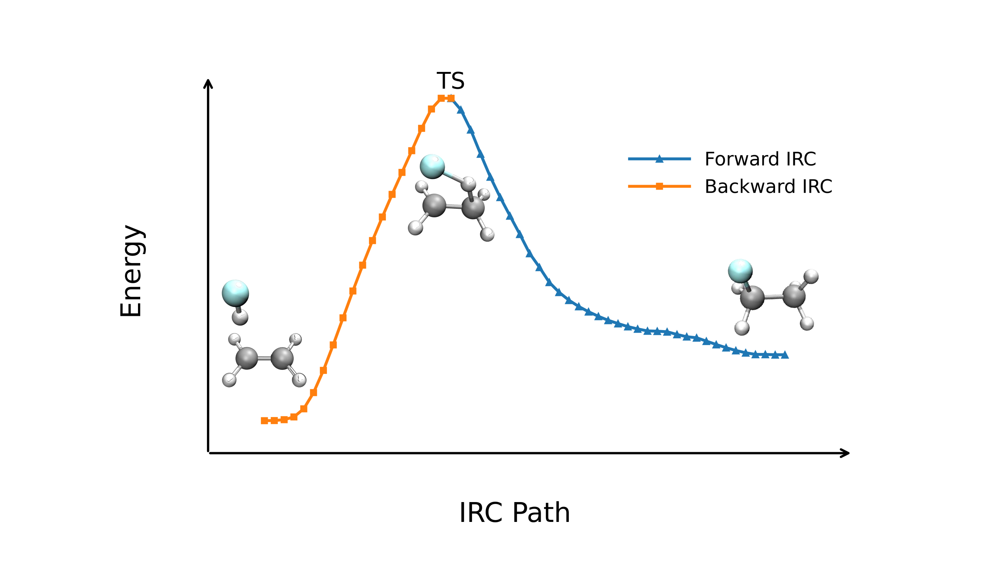

IRC: Hessian Predictor–Corrector (HPC)
Overview
The HPC method is a predictor–corrector IRC integrator in which the predictor step is based on second-order Hessian information. HPC combines a second-order local quadratic approximation (LQA) predictor with a high-accuracy corrector integration on a locally fitted potential-energy surface. This gives a favorable balance between computational cost and path quality, and in many practical implementations HPC is the default choice for routine IRC calculations.
Algorithm
At each IRC step, the HPC method proceeds in three phases:
- Predictor — Starting from the current IRC point, a predictor step is generated using the second-order LQA integrator in mass-weighted coordinates.
- Evaluation — The energy and derivative information are evaluated at the predicted point. Together with the data from the previous point, this information is used to construct a local fitted potential-energy surface.
- Corrector — A high-accuracy corrector integration is then performed on the fitted local surface, using a modified Bulirsch–Stoer scheme, to reduce finite-step deviation and obtain a point that more closely follows the IRC.
The Hessian is updated between steps using BFGS/Bofill update formulas to avoid expensive full Hessian recomputations at every IRC point.
Parameters
The complete HPCParams dataclass:
| Parameter | Type | Default | Description |
|---|---|---|---|
target_mode |
int | 1 | Index of the imaginary mode to follow. |
step_length_bohr |
float | 0.10 | Step length in Bohr. |
max_steps |
int | 50 | Maximum IRC steps per direction. |
euler_n |
int | 5000 | Number of Euler sub-steps for the predictor. |
hessian_recalc |
int | None | Recalculate Hessian every N steps. |
hessian_update |
str | bofill |
Hessian update: "bfgs" or "bofill". |
dwi_n |
int | 4 | Number of distance-weighted interpolation points. |
mbs_max_k |
int | 15 | Maximum polynomial order for modified Bulirsch-Stoer. |
mbs_points |
int | 20 | Number of MBS integration points. |
mbs_tol |
float | 1e-5 | MBS convergence tolerance. |
f_max_th |
float | 2e-3 | Max force convergence threshold. |
f_rms_th |
float | 5e-4 | RMS force convergence threshold. |
print_each |
bool | True | Print details at each IRC point. |
write_traj |
bool | True | Write trajectory XYZ files. |
Example: Dehydrohalogenation
In this example, we will perform the calculations for the CH3CH2F -> CH2CH2 + HF reaction involved in the original HPC reference. The TS structure is derived via the String method. To speed up the calculation, a larger step size of 0.15 was used.
Input Example
#model=aimnet2
#irc(method=hpc,step_length_bohr=0.15)
#device=gpu0
XYZ /path/to/transition_state.xyzOutput Visualization
After a brief wait for the calculation to complete, we can visualize the reaction path and the energy profile along the reaction coordinate.


Ref Structure
Transition State
8
Image 0 Energy = -179.06046123
C -2.0232059669 -0.0727959625 0.0125441382
H -2.5203834295 -1.0371318543 0.0792584332
H -1.4508729125 0.0518015848 -0.9031470609
H -2.8291660857 0.9415420231 0.2594518458
C -1.5340413625 0.5058439206 1.1864655006
H -1.8281739484 0.1363239914 2.1573191103
H -0.7434990832 1.2406972886 1.1609842489
F -2.9083899697 1.8448367975 1.1744474484When to Use
The HPC method is recommended when:
- The GS method is too slow due to the number of constrained optimization required at each IRC point.
- You want a good balance between efficiency and path quality.
- The PES has moderate curvature changes along the reaction path, where Hessian-based integration provides a clear advantage over simpler gradient-only methods.
For very smooth surfaces where maximum speed is desired, consider LQA. For extremely difficult or anharmonic surfaces where robustness is paramount, consider GS.